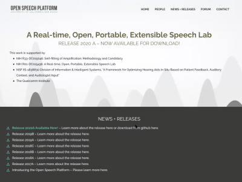

I facilitated clearer communication and project development of a research and hearing-related software platform among engineers and software developers.
Role: Mediator of project activities and addressing requests/questions with collaborators on the founder's behalf.
Key Takeaways
Implemented deliverables and redesigns to improve how the founder, students, and colleagues communicated different unique value propositions of the group's hardware/software capabilities across multiple projects.
The rest of this case study emphasizes my greatest contributions to THELab team.
I made other contributions, but low-level details of these will be ommitted due to strict confidentiality reasons.
Background
The Technology, Healthcare, and Education Lab (THELab) is a group from University of California - San Diego (UCSD) striving to provide open access to its academic research and development of a novel hearing healthcare and research toolkit, known as the Open Speech Platform (OSP).
People I've Worked With
1 principal investigator, founder of THELab
2 project staff members
~6 graduate Students
~6 undergraduate Students
6+ collaborators from UCSD and other universities
1 software vendor
1 website manager from Qualcomm Institute
THELab's Aims:
With NIH funding and a donation from Marty Cooper, the groups aspired to:
1. develop new or improved browser-based software applications
Note: The OSP interfaces were created from former team members.
2. form and retain collaborations with academic researchers and audiologists to sustainably make informed changes to OSP's software
Documentation
Across multiple iterations and software releases, this alleviated difficulties people had of setting up and understanding OSP software and hardware and enabled initial credibility to take on other projects and tasks.
Initial documentation for installing the OSP software, spanned across two releases: 2019A and 2020A (PDF).
New layout, structure, and content for one of my redesigned OSP software guides for release 2020B, made on Figma.
view PDFFinal draft of an OSP software guide for 2020B, made on Figma. view PDFFor release 2021A, incorporated installation steps and other explanation of the software and hardware setup into a series of Google Docs. The image preview shown is a document for setting up the OSP hardware. view PDF
Worked with a website designer from Qualcomm Insitute to:
resolve server-side connection issues with WordPress Management of the old OSP website (see images of my email communication)
gain WordPress admin access and confirm SSL certificates to two other websites
THELab Website Development
The entire THELab website was a redesign of the older OSP website that the website designer helped to clone.
Before - Old OSP website, 2020 version of landing page shown

After - Portions of the OSP website become a subset of THELab Website, accessible via subnavigation
Since June 2020, created a system for members to provide bios to showcase themselves publicly within the redesigned People Page of THELab Website.
1. Document template for others to copy and provide their bio information.2. Slack instructions on providing bio info.3. Bios and profile images created by other team members within a Google Drive folder.4. Bio published within the People Page of OSP website.Before - People Page on Old OSP WebsiteAfter - Redesigned People Page on THELab website
Survey Publishing
During websites development, published three different surveys using Google Forms, two of which are confidential.
They were designed to help the founder collect background information from academic researchers and people with hearing impairment(s).
Forum Design
For the old OSP website and PI's request, created an online platform from a WordPress plugin from PI's request to enable visitors to find and communicate information related to OSP software & hardware documentation, changes, issues, and suggestions.
Before - Outdated, spam-filled forum posts.Compiled research on multiple aspects of online community platforms and services, including onboarding experience, forum navigation, posting features, pricing, etc.After - New Forum Version 1, far more interface customization and searching affordances, but more overwhelming to learn, use, and manage.
After - New Forum Version 2, balance between forum editing features and a simpler interface and navigation experience. View forum on OSP website.
Another Transition to a Different Forum Platform
The website designer opted for Discord, as it could help to avoid the messy repercussions of a WordPress security breach/server malfunctioning. I kept the PI's familiarity with Slack and importance of adequate forum moderation features in mind and revisited online research comparing Slack versus Discord.
Discord was chosen as it offered just as much (if not more) flexibility, control, and chat-based features to Slack's paid plans.
THELab Forum Initial Structure on Discord
You can visit the forum through this invite link (requires the Discord app on your computer or smartphone).
Visitors would read and react to the rules first before gaining the ability to message in the channels. At the time, a majority of the channels created are empty except for the "#rules" and the "#read-first-forum-intro" channels. This was because the PI wanted the forum to grow organically over time.
If more time allowed, documentation content of OSP hardware and software would better inform visitors of what each of the channels meant.
Research Proposals
Created and submitted the following documents to UC San Diego's Institutional Review Board (IRB), which received IRB approval and exemption to a research study to have human subjects record themselves.
Study protocols on the research design, procedures, asssociated risks, information use, participation compensation, etc. for both the IRB and for human subjects.
Informed consent to provide enough context to human subjects on their participation and rights before they sign the consent form.
Consent form as a Google Forms submission.
Documentation on using a software application.
Recruitment materials: email, flyer, social media post).
Two email confirmations from UC San Diego's IRB of study submission and review completion.
Additional IRB Submissions Needed
Created additional document templates and drafts for a separate IRB to help the PI prepare:
apply for separate non-exempt study.
an amendment for the existing exempt study aforementioned.
Additional information the documents and templates are also confidential.
Next Steps
With more time, resources, people, and freedom, I would resume the following activities related to user experience and design thinking:
Revisiting OSP's Root Challenges
Created visualizations to ideated my understanding of the current landscape of OSP based on multiple OSP meetings.
Mind map of OSP related activities: onboarding experience of OSP, software activities for developers, OSP usage for research investigations, etc. View via LucidChart.Tagging of different quotes from OSP-related publication (by Louis Pisha) based on different types of problem spaces using Miro tool: OSP's relation to the real world, OSP's impact, etc.Sorting raw data into different problem spaces, then extrapolating summarized insights for each problem space using Miro.
Redesigning the Processes Involved with App Development
Visualized possible integrations of design thinking phases towards how each software application within OSP could be redesigned.
Diagram on LucidChart shows possible paths of activities to do to iteratively incorporate research, insights, and feedback towards describing use cases, prioritized apps and demos, and other deliverables/outcomes.
Key Takeaways
Implemented deliverables and redesigns to improve how the founder, students, and colleagues communicated different unique value propositions of the group's hardware/software capabilities across multiple projects.
The rest of this case study emphasizes my greatest contributions to THELab team.
I made other contributions, but low-level details of these will be ommitted due to strict confidentiality reasons.
Other Case Studies
Electric Stride
UX Design, UX Research, Rapid Ideation
An exercise mat for people with Parkinson's to train their gait and stride length. This was created during the Electrical and Computer Engineering (ECE) Design Competition.
Automation Playground
Automation Playground is a research subgroup of UC San Diego's Design Lab.
Helped to spearhead a web design project to showcase the research group for the former founder.
Triton Television Reel
This video showcases student projects within Triton Television (TTV), a film and media production student organization at University of California - San Diego.
TCLC Rap Video
A rap-themed video that demonstrates how kids within an affordable housing community showcase their activities in their afterschool program.